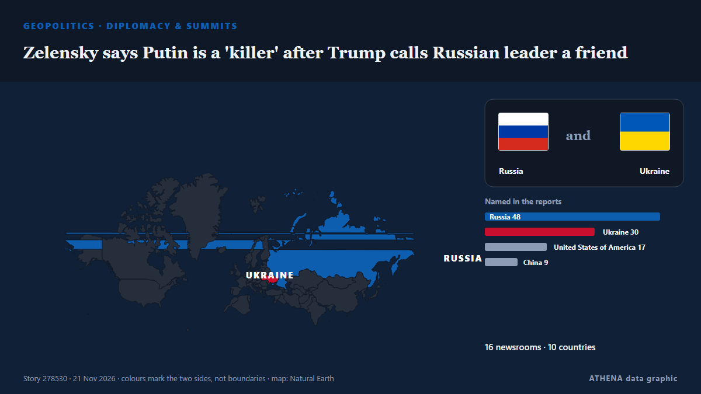

ATHENA Glaux Intelligence — Παγκόσμια ειδησεογραφική ανάλυση — κάθε αριθμός εξηγημένος
Κάθε είδηση, ελεγμένη σε πολλές χώρες.
Το ATHENA Glaux παρακολουθεί 635 ειδησεογραφικά μέσα σε όλο τον κόσμο. Μια είδηση γίνεται επαληθευμένο γεγονός μόνο όταν την αναφέρουν ανεξάρτητα μέσα. Κάθε γεγονός δείχνει ποιος το ανέφερε πρώτος και έναν βαθμό κινδύνου με τους λόγους του.
Αναφορές έρχονται από ανεξάρτητα μέσα — όταν δύο συναντηθούν στην ίδια ιστορία, γίνεται επιβεβαιωμένο γεγονός.
Πώς ελέγχει το ATHENA μια είδηση
- ΣυλλογήΟι αναφορές φτάνουν από ανεξάρτητα μέσα σε πολλές χώρες.
- ΑντιστοίχισηΌταν δύο μέσα συναντιούνται στην ίδια είδηση, γίνεται επαληθευμένο γεγονός.
- ΕξήγησηΚάθε γεγονός δείχνει ποιος ήταν πρώτος, πόσο εξαπλώθηκε και γιατί ο κίνδυνος είναι αυτός.

ΓεωπολιτικήZelensky says Putin is a 'killer' after Trump calls Russian leader a friend
Earlier this week, Trump greeted Putin ahead of a meeting in China and said the pair have a "great relationship". από BBC News
Οι τίτλοι των ειδήσεων παρουσιάζονται στα αγγλικά, όπως δημοσιεύτηκαν.
At Least 9 Killed In Russian Attacks On Ukraine, Kyiv Bridges Damaged
At least nine people were killed and 28 injured on November 20 in an overnight Russian drone and ballistic missile attack on Ukraine. από RFE/RL (English)
UK and EU strike ‘landmark’ deal to rebuild ties after Brexit
🇬🇧🇪🇺 A fresh start after #Brexit? The #UK and #EU have agreed on a landmark #deal to rebuild ties, following a summit in Brussels this Friday. από France 24 English

Πλοία στα θαλάσσια περάσματα τώρα
Ζωντανές μετρήσεις AIS. Πατήστε ή περάστε πάνω από μια μπάρα για λεπτομέρειες.
Fossil fuel row stalls COP31 climate deal
Its applications now extend well beyond hessian and sacks to biodegradable shopping bags, geotextiles for erosion control and coastal protection, automotive composites, and advanced materials such as… από The Business Standard (Bangladesh) (working feed)
UK and EU reach deals on food trade and youth mobility
A key UK demand is that the EU grant it special status under the bloc's "Made in Europe" rules, notably for cars. από The New Arab
Africa demands delivery on climate finance as COP31 closes
By Joyce Gyekye African countries have intensified calls for developed nations to honour their climate finance commitments, insisting that the outcome of COP31 must deliver concrete action on… από GBC Ghana Online
Γεωπολιτική, Πολιτική & Ασφάλεια
Περισσότερα ›Denmark expels Russian diplomat over attempt to kill Ukrainian rapper
Denmark has decided to expel a Russian diplomat after suspecting Russia’s involvement in an attempted assassination of a Ukrainian rapper. από Arab News
- Πόλεμοι & συγκρούσεις
Saudi-Led Coalition Says Downed 3 Houthi Missiles Headed For Riyadh
- Εκλογές & πολιτική
Crime Costs Brazil US$74B as Lula Waits
- Εκλογές & πολιτική
Netanyahu associates acknowledge role in setting off election day arrests
- Διπλωματία & σύνοδοι
Somalia: Somalia Orders UAE Ambassador to Leave Within 72 Hours, Recalls Envoy From Abu Dhabi
Οικονομία, Χρηματοοικονομικά & Αγορές
Περισσότερα ›EU Proposes Tax on Big Tech to Boost Budget
Supporters of the levy say Donald Trump's defeat in the midterm elections finally opens an opportunity. από Politico Europe
- Πληθωρισμός & επιτόκια
Mortgage interest rates continue to rise in Portugal
- Μετοχές & κινήσεις αγορών
UK braced as temperatures could drop to minus 10C in coldest night of autumn
- Κρυπτονομίσματα & ψηφιακά στοιχεία
‘The Altruists’ Review: Netflix’s Slight Sam Bankman-Fried Series Tells a Strange, Crooked Love Story
- Κρυπτονομίσματα & ψηφιακά στοιχεία
Bitcoin Falls Below US$60,000 as Funds Sell
Εμπόριο, Βιομηχανία & Υποδομές
Περισσότερα ›First Ladies of Azerbaijan and Vietnam visited Heritage House in Hanoi
On November 21, First Lady of the Republic of Azerbaijan Mehriban Aliyeva had a meeting with First Lady of Vietnam Ngo Phuong Ly at the Heritage House in Hanoi. από AzerNews
- Κατασκευές & υποδομές
Abinader positions Dominican Republic as bridge between Latin America and Middle East
- Κατασκευές & υποδομές
Zelensky Warns Putin Crimean Bridge ‘Will Not Stay’
- Μεταποίηση
Prosecutor: Tata Steel intentionally polluted IJmuiden 598 times
- Κατασκευές & υποδομές
Ukraine hits ammunition depot in Crimea and bridge in Luhansk Oblast
Ενέργεια, Πόροι & Περιβάλλον
Περισσότερα ›Climate Minister Musadik Malik arrives in India for SCO dialogue
Federal Minister for Climate Change Musadik Masood Malik arrived in New Delhi on Friday to attend the Shanghai Cooperation Organisation (SCO) Civilisational Dialogue Forum, according to an official… από Business Recorder
- Κλίμα & κλιματική πολιτική
Climate talks in overtime as nations wrestle with response to worsening global warming
- Πετρέλαιο & φυσικό αέριο
Saudi Arabia Agrees to Store Additional 16 Million Barrels of Crude in Japan
- Κλίμα & κλιματική πολιτική
UN Climate summit enters final phase with no deal in sight
- Ακραία καιρικά & φυσικές καταστροφές
Nepal flood victims' families may wait up to a year for death certificates
Τεχνολογία, ΤΝ & Κυβερνοασφάλεια
Περισσότερα ›TSMC tightens China AI chip curbs as new US rules close manufacturing loophole, sources say
TAIWAN’s TSMC is tightening restrictions on Chinese chip designers, suspending some previously permitted advanced manufacturing orders and generally… από BusinessWorld
- Κυβερνοασφάλεια
The FBI was hacked again, this time the breach targeted its crime database
- Κυβερνοασφάλεια
European Commission hit by major cyberattack
- Διάστημα & δορυφόροι
Voyager 1 spacecraft reaches one light-day milestone
- Επεξεργαστές & υπολογιστική
US approved Nvidia, AMD chip sales to China, reviving security concerns
Επιχειρήσεις, Εταιρείες & Επενδύσεις
Περισσότερα ›Iran advances in UN E-Government Development Index
Iran has climbed 14 places in the United Nations E-Government Development Index (EGDI), rising from 101st in 2024 to 87th in 2026, according to the UN website. από Tehran Times
- Κλάδοι & εταιρικοί κίνδυνοι
Japan automakers to standardize parts, materials for efficiency
- Επενδύσεις
Governor calls for stronger public-private partnership to accelerate economic growth
- Εταιρική στρατηγική
CITEX 2026 Brings Together Over 100 Iranian Technology Companies
- Κλάδοι & εταιρικοί κίνδυνοι
Honda, Toyota recall 1.6 million vehicles over Takata airbag rupture risk
Δυστυχήματα & έκτακτες ανάγκες
Περισσότερα ›Man convicted of starting deadly 2025 Palisades blaze in Los Angeles
The Palisades fire killed 12 people as it incinerated entire neighbourhoods in Los Angeles and Malibu. από The Irish News (Belfast)
- Δυστυχήματα & έκτακτες ανάγκες
APC campaign finance director dies in road crash
- Δυστυχήματα & έκτακτες ανάγκες
Pedestrian, 60s, dies after hit-and-run in Co Mayo
- Δυστυχήματα & έκτακτες ανάγκες
Six policemen injured as bus rams police van
- Δυστυχήματα & έκτακτες ανάγκες
‘Joy Bangla’ now a slogan for fleeing: Humaiun Kobir
Τρεις τρόποι να διαβάσετε σήμερα
Ξεκινήστε από αυτόν που ταιριάζει στον χρόνο σαςΕπαληθευμένα γεγονότα
Κατά σειρά έκτασης της κάλυψης
- Jensen Huang has 5 ways to push for an Nvidia comeback145 μέσα · 47 χώρεςΚίνδυνος 4.4
- Κίνδυνος 5.8
- Cargo ship attacked in Gulf of Finland international waters — governor78 μέσα · 37 χώρεςΚίνδυνος 6.0
- South Korean president reiterates US$75,000 reward for reporting college exam cheating75 μέσα · 33 χώρεςΚίνδυνος 3.7
- Κίνδυνος 4.9
Γραφείο Ανάλυσης
Κάντε μια ερώτηση και διαβάστε τεκμηριωμένη αξιολόγηση μιας βασικής είδησης, μαζί με το τι θα την διέψευδε.
Ανοίξτε το Γραφείο Ανάλυσης ›Η σημερινή εικόνα
| 14:00 | 650 |
|---|---|
| 15:00 | 765 |
| 16:00 | 592 |
| 17:00 | 732 |
| 18:00 | 619 |
| 19:00 | 466 |
| 20:00 | 677 |
| 21:00 | 0 |
| 22:00 | 0 |
| 23:00 | 0 |
| 00:00 | 0 |
| 01:00 | 0 |
| 02:00 | 0 |
| 03:00 | 0 |
| 04:00 | 0 |
| 05:00 | 0 |
| 06:00 | 0 |
| 07:00 | 928 |
| 08:00 | 1002 |
| 09:00 | 879 |
| 10:00 | 992 |
| 11:00 | 830 |
| 12:00 | 539 |
| 13:00 | 448 |
Κίνδυνος των σημερινών γεγονότων
Αναδυόμενα σήματα
- Απότομη αύξηση · Ενεργό τώραYemen's Iran-aligned Houthis
- Νέο όνομα στις ειδήσεις · Ενεργό τώραBBL
- Απότομη αύξηση · Ενεργό τώραNitish Setu
- Νέο όνομα στις ειδήσεις · Ενεργό τώραJonathan Rinderknecht
- Απότομη αύξηση · Ενεργό τώραBayelsa
Επίσημες προειδοποιήσεις
- M 5.9 - 238 km SW of Yanglong, ChinaM5.9 · PAGER yellow · USGS ·
- Orange notification for tropical cyclone AKVAN-26. Population affected by Category 1 (120 km/h) wind speeds or higher is 0 (20.826 million in Tropical Storm).Orange · GDACS ·
Μείνετε ενημερωμένοι
ATHENA Weekly Risk Picture
Οι μεγαλύτεροι γεωπολιτικοί, οικονομικοί και ναυτιλιακοί κίνδυνοι της εβδομάδας, διασταυρωμένοι και βαθμολογημένοι.
Κάθε Παρασκευή στις 08:00 ώρα Ελλάδας · δωρεάν · στα αγγλικά
Δωρεάν εγγραφήΤο ATHENA στο Telegram
Οι ειδήσεις τη στιγμή που δημοσιεύονται: έκτακτα γεγονότα με κίνδυνο 6 ή περισσότερο, ωριαία σύνοψη, ενημερώσεις κινδύνου και η ημερήσια ενημέρωση στις 10:00.
Δωρεάν · αναρτήσεις στα αγγλικά · αποχωρείτε όποτε θέλετε
Είσοδος στο κανάλιΤην εγγραφή τη διαχειρίζεται η beehiiv με διπλή επιβεβαίωση: τίποτα από όσα πληκτρολογείτε δεν αποστέλλεται στο ATHENA, και κάθε τεύχος έχει σύνδεσμο διαγραφής.
Παρακολούθηση κινδύνων
Περισσότερα ›Παγκόσμιοι κίνδυνοι — εβδομάδα 47, 2026 (16–22 Νοε) ›